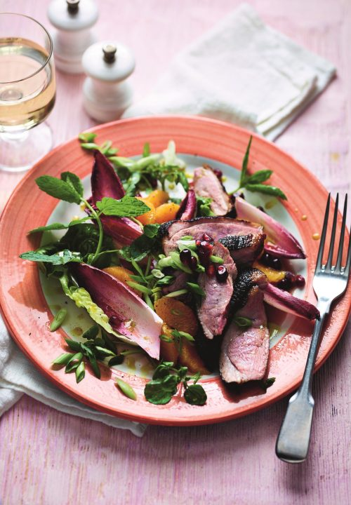

Allspice Honey Duck with Chicory, Orange & Pomegranate Salad

Description
Duck is a delicious meat when it’s cooked correctly and its richness pairs beautifully with fruit and citrus. This Middle Eastern-inspired salad is surprisingly easy to make and makes a perfect date-night meal – it looks impressive and tastes wonderful with the sweet and sour notes of pomegranate. Serve with a side of couscous, if you like.
Ingredients
For the Allspice Honey Duck
2 tbsp pomegranate molasses
2 tbsp runny honey
1 tbsp light olive oil
zest and juice of 1 orange
1 tsp ground allspice
2 x 150g duck breasts, at room temperature
seeds of ½ pomegranate
sea salt
For the Salad
1 little gem lettuce, leaves separated
2 small heads of chicory (red is nice), leaves separated
a handful of watercress
8–10 mint leaves, shredded, plus extra to serve
2 spring onions, trimmed and thinly sliced
1-2 oranges, peeled and segmented
For the Dressing
3 tbsp extra-virgin olive oil
½ tbsp pomegranate molasses
1 tbsp red wine vinegar or sherry vinegar
2 tsp runny honey
a pinch of ground allspice
Step By Step
- Put the pomegranate molasses, honey, oil, half the orange zest and 2 tablespoons of juice, and half the allspice into a shallow dish and mix well. Using a sharp knife, score the skin of the duck breasts in a criss-cross pattern, taking care not to cut through to the flesh. Brush a little of the marinade onto the skin. Sit the breasts skin-side up in the marinade, cover and set aside for 30 minutes or chill and marinate for longer if you have the time.
- Preheat the oven to 200°C/180°C fan/gas 6.
- Remove the duck from the marinade, shaking off any excess and patting the skin dry with kitchen paper. Season generously with salt and sprinkle over the remaining allspice.
- Put the duck skin-side down into a cold frying pan, place over a medium-high heat and cook for 7–10 minutes without moving until the fat layer has rendered and the skin has turned golden and crispy. Carefully drain any excess fat from the pan, turn the breasts over and cook for 1 minute to seal the meat. If you’re not using an ovenproof pan then transfer the duck to a baking tray or dish, skin-side up. Place in the oven and cook for 5–7 minutes for medium, or longer according to your preference. Remove from the oven, cover loosely with foil and leave to rest for 6–8 minutes while you prepare the salad.
- In a small bowl, mix together the dressing ingredients with the remaining orange zest and 1 tablespoon of juice. Season with a little salt and stir in half the pomegranate seeds. Put the salad ingredients into a large bowl and drizzle over some of the dressing. Gently toss to coat.
- Thinly slice the duck breasts. Arrange the salad on serving plates and add the duck slices. Drizzle with a little more dressing and scatter with mint leaves and the remaining pomegranate seeds. Serve immediately.